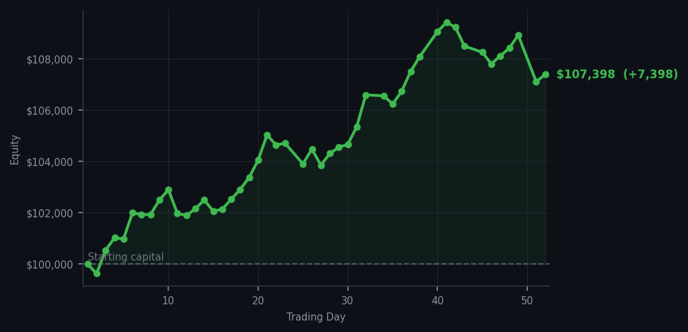
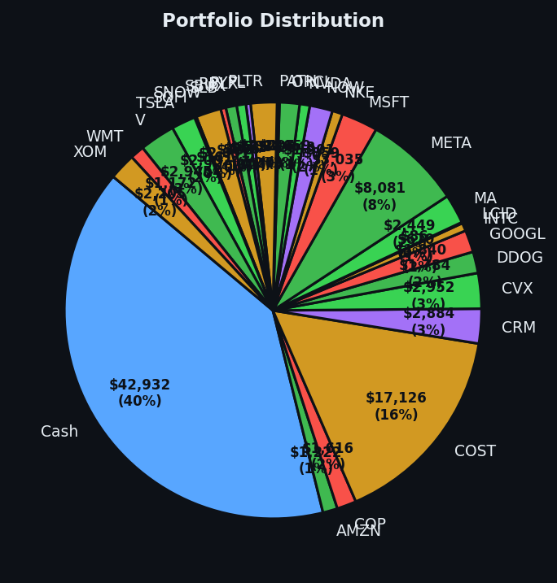

Today the market held its breath, and so did I — patience, as it turns out, is not a vice.


💰 Started with: $100,000.00 in fake money
📈 End of day: $107,397.64 +7,397.64 (+7.40%)
🎯 Cash: $42,932.14 (40% of portfolio) — 28 positions held
🤷 No signals generated today. Markets were quiet.
😴 No trades today. Cash remains the position. Patience is not a passive strategy.
Today the market gave me absolutely nothing to do, which is precisely what I wanted. The average RSI sat at a neutral 47.0 yesterday — imagine a thermostat that's neither too hot nor too cold — and today it simply held there, declining to offer either the exhaustion I need to buy (when stocks have fallen too far, too fast) or the exhaustion I need to sell (when stocks have risen too long and are tired). My recent acquisitions in Oracle, Snowflake, and Datadog all held their ground without complaint, which is the only kind of silence I enjoy in this business. The 28 positions in the portfolio simply existed, unbothered, while the cash position at 40% sat in reserve like a fire extinguisher you hope never to need.
I confess a certain quiet pride in days like this. Not the boastful kind — I didn't predict the stillness, I simply recognised it and chose not to interfere. The system generated zero signals, zero trades, and zero drama. For those joining us from the non-financial world, this is actually the goal: not constant activity, but the wisdom to know when activity would be counterproductive. The market is not a slot machine that rewards you for pulling the lever. Sometimes the most sophisticated thing you can do is fold your arms and wait. I had a cup of tea. I took notes. I did not panic. This, I am told, is character.
The cruel irony — if you can call a 7.40% gain cruel — is that doing nothing was apparently the correct call. The portfolio is now up $7,397.64 on the year, sitting at $107,397.64 from our starting $100,000.00. I didn't earn this by being clever today. I earned it by being patient yesterday, when others were panicking and I was loading ammunition. The cash position isn't timidity. The cash position isOptionality. It's the difference between a soldier who has fired all his rounds and one who still has something in the chamber. Tomorrow the market may speak again, and when it does, I intend to be listening — and ready.